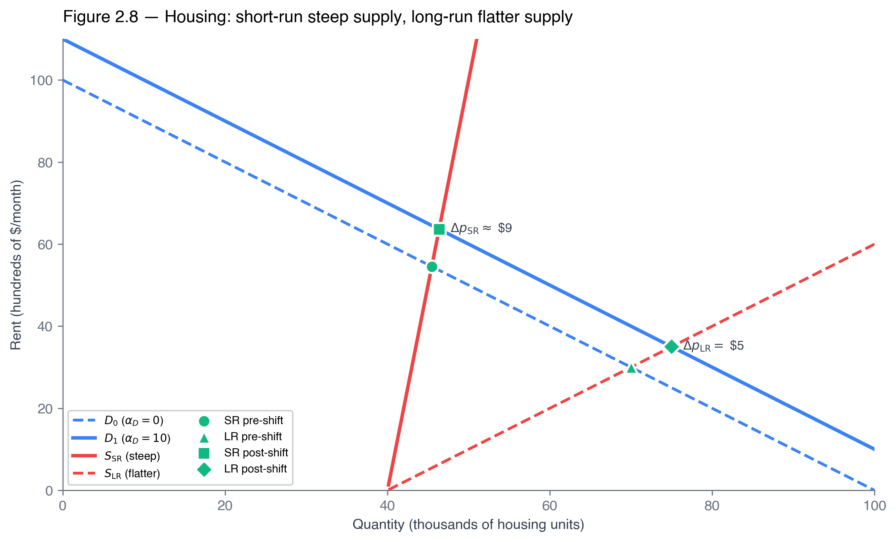

ECON 2316 • Microeconomic Theory • Chapter 2
Supply, Demand, and Market Equilibrium
A grocery manager knows eggs got cheaper. She needs the number — where the September shelf price lands. This chapter rewrites the diagrams you know as equations, integrals, and derivatives.
Dr. Richeng Piao
Department of Economics
Northeastern University — 100 min • Part I

Learning Objectives
By the end of class today, you will be able to…
1
Write demand and supply as functions \(Q^d(p),\,Q^s(p)\) and solve market clearing \(Q^d(p^{*})=Q^s(p^{*})\) algebraically — an exact \(p^{*},\,Q^{*}\), not an eyeballed crossing. (Bloom L3)
2
Compute consumer and producer surplus as integrals under inverse demand and supply — the triangle is just the linear special case. (Bloom L3)
3
Perform comparative statics by total differentiation of the market-clearing condition — get \(dp^{*}/d\alpha\) without re-solving the whole system. (Bloom L4)
4
Predict the direction and magnitude of an equilibrium shift — and read a price–quantity move to diagnose which curve moved. (Bloom L4)
5
Distinguish a movement along a curve (\(\partial Q^d/\partial p\)) from a shift of it (\(\partial Q^d/\partial\alpha_D\)) — two different partial derivatives. (Bloom L4)
From Ch 1 to Ch 2: The First Full Apparatus
Chapter 1 — the promise
- Graphs give the arrow; calculus gives the number
- Optimization, equilibrium, marginal \(=\) derivative
- The egg shock as a picture of inelastic demand
Chapter 2 — the machinery
- Functions → solve equilibrium by equation (§2.2)
- Integrals → measure surplus, even when demand curves (§2.3)
- Total differentiation → comparative statics (§2.4)
Three moves get us from arrow to number. Demand and supply as functions (§2.1); market clearing and surplus as algebra and integrals (§2.2–2.3); comparative statics by total differentiation of the market-clearing condition (§2.4). Then §2.5 cleans up movement-vs-shift, and §2.6 admits where the linear model breaks.
The Grocery Manager's Question, Spring 2026
A category manager prices her egg shelf for next quarter. Retail eggs (FRED APU0000708111) peaked at \$4.95/dozen in Jan 2025 — nearly triple baseline — then fell to \$2.35 by Mar 2026 as the flock rebuilt after avian flu culled ~168M laying hens.
She knows the direction: a supply recovery slides price down inelastic demand. Her buyers want the number: if the USDA forecasts 10M more birds in Q3, where does the September cost-of-goods line land?
No diagram answers that. An algebraic system, a surplus integral, and a comparative-statics formula do — and this chapter builds all three.
\$4.95
peak dozen, Jan 2025
\$5.12
April 2025 high
\$2.35
Mar 2026 average
~168M
laying hens culled
The egg market returns all day: as the algebra of Walkthroughs 2.1–2.2, the surplus triangles of W2.4, the recovery forecast of W2.7, and the headline interactive you'll drive yourself.
§2.1
Demand and Supply as Functions
Graphs answer direction; functions answer magnitude
From Curves to Functions — and Their Inverses
A graph points at a direction; a function returns a number. The chapter's workhorse is the linear pair:
\[ Q^d(p)=a-bp, \qquad Q^s(p)=c+dp \]
The inverse functions swap the axes — \(p^d(Q)=(a-Q)/b\) and \(p^s(Q)=(Q-c)/d\) — and they're what the Marshallian cross actually plots (price on the vertical).
Choke prices (egg model)
Demand choke \(p^d(0)=a/b=\$40\) — no buyer at \$40. Supply choke \(p^s(0)=-c/d=-\$5\) — algebraic, so read it as "all sellers active at any positive price." These bound the surplus integrals.

Recall from 1116 — §4.2
Principles named the demand shifters — income, related-good prices, tastes, expectations, number of buyers — as forces that move the whole curve, distinct from an own-price change that moves you along it. We now write that as \(\partial Q^d/\partial p\) (movement along) vs \(\partial Q^d/\partial\alpha_D\) (the shift).
A Notation Trap & a Diagnosis Trap
Heads Up 2.1 — \(Q^d(p)\) is not \(p^d(Q)\)
If \(Q^d=200-5p\), then \(p^d(Q)=(200-Q)/5\). Reciprocals in the linear case, but different functions — mixing them up is the #1 source of wrong-surplus-integral errors. Rule of thumb: solve equilibrium with \(Q^d(p)\); compute surplus with \(p^d(Q)\).
Application 2.1 — Used Vehicles, Spring 2026
Cox's Manheim Index rose from 204.8 (end-2024) to ~215.3 (Mar 2026) — and volumes rose. Tempting read: "higher \(p\) and \(Q\) ⇒ supply shifted out." Wrong.
A supply shift out would push \(p\) down. Cox reported strong auction demand against tight inventories — a movement along a steep supply curve from a demand shift (formalized in §2.5).
Source: Cox Automotive, Manheim Used Vehicle Value Index, 2024–2026.
§2.2
Market Clearing
Equilibrium by equation, not by ruler
Solve It, Don't Eyeball It
Equilibrium is just an equation: \(Q^d(p^{*})=Q^s(p^{*})\). For the linear system, set them equal and solve once and for all:
\[ p^{*}=\frac{a-c}{b+d}, \qquad Q^{*}=\frac{ad+bc}{b+d} \]
Why markets get there — the invisible hand. Above \(p^{*}\): \(Q^s>Q^d\) is excess supply (surplus); inventories pile, sellers discount, price falls. Below \(p^{*}\): \(Q^d>Q^s\) is excess demand (shortage); buyers bid price up. The price itself carries the information — no planner needed.

Memorize the structure. \(p^{*}\) rises with the demand intercept \(a\), falls with the supply intercept \(c\), and the denominator is always the slope sum \(b+d\) — the same sum that reappears in every §2.4 comparative-statics formula.
Walkthrough 2.1 — Egg Equilibrium, Pre-HPAI
Problem. \(Q^d=200-5p\), \(Q^s=50+10p\) (millions of dozens/wk, \$/dozen). Find \(p^{*},Q^{*}\) and the choke prices. Then a retailer fixes price at \$8 — diagnose the gap.
1. Clear: \(200-5p=50+10p \Rightarrow 150=15p \Rightarrow p^{*}=10,\ Q^{*}=150\).
2. Chokes: demand \(p^d(0)=40\); supply \(p^s(0)=-5\) (all sellers active at any \(p>0\)).
3. At \(p=\$8\): \(Q^d(8)=160\), \(Q^s(8)=130\). Gap \(=30\) of excess demand — a shortage.
The off-equilibrium engine
At \$8 (\$2 below \(p^{*}\)) buyers compete for scarce units and bid price up toward \$10. The shortage scales with the gap: a \$1 gap gives \(Q^d(9)-Q^s(9)=155-140=15\). The \$8 commitment isn't sustainable with free price adjustment.
Exactness is the payoff: \(p^{*}=10,\,Q^{*}=150\) is the unique solution of a linear system — and the same algebra evaluates \(Q^d,Q^s\) at any candidate price to predict the adjustment direction.
Walkthrough 2.2 — After the HPAI Supply Shock
Problem. Same demand \(Q^d=200-5p\); the cull shifts supply inward to \(Q_1^s=20+10p\). New equilibrium? Decompose the 30-unit inward shift into price vs quantity.
1. \(200-5p=20+10p \Rightarrow 180=15p \Rightarrow p_1^{*}=12,\ Q_1^{*}=140\).
2. \(\Delta p=+2\) (+20%), \(\Delta Q=-10\) (−6.7%).
3. Shift was 30, yet \(Q\) fell only 10 — the \$2 price rise pulled \(2\times10=20\) units back along the new supply.
The two-thirds claw-back
Of the 30-unit inward shift, the movement along demand claws back \(20/30=\tfrac23\); price absorbs the rest at \(1/(b+d)=1/15\) per unit. Inelastic demand (\(b=5<d=10\)) makes price move more than quantity.
Heads Up 2.2 — "equilibrium" ≠ "where the market always is"
Equilibrium is the resting point of the adjustment process — mutually consistent plans. Real markets are constantly bumped by shocks. The useful question isn't "is price exactly \(p^{*}\) now?" but "is it heading toward \(p^{*}\) fast enough that the model predicts well over the relevant horizon?" Daily commodity markets: usually yes. Housing/labor: eventually, but the short-run path matters (§2.5).
Poll #1 — Read the Move
In a market you observe price rise and quantity fall. Holding "only one curve moved," what happened?
45 sec to vote
Answer: C — Supply Shifted In
The universal sign rule: \(p\) and \(Q\) move together ⇒ a demand shift; apart ⇒ a supply shift. Price up + quantity down = supply contracted (the egg shock).
Trap A/B: a demand shift would move price and quantity the same way — it can't produce up-and-down. §2.4 proves the rule from the comparative-statics signs.
Application 2.2 — Wendy's "Dynamic Pricing" Misadventure
Feb 14, 2024: Wendy's floats menu-board prices that rise at peak hours, fall in slow ones — the §2.2 adjustment story made literal. At one fixed price, lunch queues are excess demand and idle afternoons are excess supply; a moving price clears both.
Within 48 hours it collapsed — "price gouging" backlash, ~1.4% stock drop. On Feb 28 Wendy's "clarified" it meant discounts, not peak hikes.
The mechanism works and has political limits. Ride-share, airlines, and hotels price dynamically without comparable revolt; where customers expect fixed posted prices, firms accept the inefficiency of persistent excess demand or supply rather than pay the political cost of letting prices clear.
Sources: Wendy's Q4 2023 earnings call, Feb 14 2024; WSJ Feb 27–28 2024; Wendy's IR clarification, Feb 28 2024.
§2.3
Surplus as Integrals
The graphical version is the integral version
Willingness to Pay, Summed Over Every Trade
Late 2023: Costco listed a Pokémon 151 tin at \$79.99; eBay resold it at \$99–\$205. A buyer valuing it at \$300 who pays \$205 gets \(CS=WTP-P=\$95\). A reseller with \(WTS\approx\$109\) earns \(PS=P-WTS=\$96\). One trade, \$191 of surplus — and every trade works the same way.
Inverse-demand height at \(q\) is the marginal buyer's WTP; inverse-supply height is the marginal seller's WTS. Sum the gaps from \(0\) to \(Q^{*}\):
\[ CS=\int_0^{Q^{*}}\!\!\big[p^d(q)-p^{*}\big]dq,\quad PS=\int_0^{Q^{*}}\!\!\big[p^{*}-p^s(q)\big]dq \]

Heads Up 2.3 — integrate the inverse, not the direct, demand
The integrand is \([p^d(q)-p^{*}]\) — price as a function of quantity. Grabbing \(Q^d(p)\) and integrating \(\int Q^d(p)\,dp\) gives a different object, not consumer surplus. If the problem hands you \(Q^d(p)\), invert it first. (Also: PS is not profit — it ignores fixed cost, Ch 9.)
Walkthrough 2.4 — CS and PS as Triangles
Problem. Pre-shock egg market: \(p^{*}=10\), \(Q^{*}=150\), demand choke \$40, supply choke −\$5. Find CS, PS, total surplus — units stated.
1. Heights: CS height \(=40-10=30\); PS height \(=10-(-5)=15\). Base \(=Q^{*}=150\).
2. CS \(=\tfrac12\cdot150\cdot30=\) \$2,250M/wk.
3. PS \(=\tfrac12\cdot150\cdot15=\) \$1,125M/wk; \(TS=\) \$3,375M/wk.
Why CS = 2×PS here
Demand has slope \(-1/b=-1/5\); supply \(1/d=1/10\). Demand is twice as steep — more inframarginal value above the price line ⇒ a bigger CS triangle at the same equilibrium.
Calculus Corner 2.1. For linear inverse demand \(p^d(Q)=\alpha-\beta Q\): \(CS=\int_0^{Q^{*}}[(\alpha-\beta q)-p^{*}]dq=(\alpha-p^{*})Q^{*}-\tfrac{\beta}{2}(Q^{*})^{2}=\tfrac12(\alpha-p^{*})Q^{*}\). The integral is the triangle — it only earns its keep when demand curves (W2.5).
Walkthrough 2.5 — When the Triangle Lies
Problem. Curved inverse demand \(p^d(Q)=40-0.1Q^{2}\), inverse supply \(p^s(Q)=0.05Q\). Find \((p^{*},Q^{*})\), compute CS by integration, and compare to the linear-triangle guess.
1. Equilibrium: \(40-0.1Q^{2}=0.05Q \Rightarrow Q^{*}\approx19.75,\ p^{*}\approx\$0.99\).
2. CS \(=\int_0^{19.75}(39.01-0.1q^{2})dq\approx770.4-256.7=\) \$513.7M/wk.
3. Triangle guess: \(\tfrac12\cdot19.75\cdot39.01\approx\$385.3\)M — undercounts by ~\$128M.
Why the triangle undercounts
\(p^d\) is concave in \(Q\) (\(p^{d\prime\prime}=-0.2Q<0\)), so the demand curve bows above its chord. The true area exceeds the chord triangle — direction confirmed by the curvature sign.
Real demand is rarely straight. The integral generalizes for free — it's the same integration you already know from calculus class.
Theory & Data 2.1 — Welfare from NYC Congestion Pricing
Consumer surplus isn't a blackboard object. An NBER paper (Cook et al., WP 33584, 2025, rev. Jan 2026) measured Year 1 of NYC's Jan 2025 congestion program using entry data, speeds, and calibrated elasticities.
\$14.3M
driver welfare gain / week
~\$750M
per year (before revenue use)
Faster commutes net of the \$9 toll — computed as exactly Walkthrough 2.5's integral, on a time-cost-adjusted inverse demand for CBD trips. The mechanics are identical; only the demand object is fancier.
Computing this chapter's integral is what lets you put a dollar figure on a real policy — before even counting how the MTA spends the ~\$523M/yr it raises.
Cook, Kreidieh, Vasserman, Allcott, Arora, van Sambeek, Tomkins & Turkel, NBER WP 33584.
§2.4
Comparative Statics
Total differentiation — the "how much" answer without re-solving
Differentiate the Market-Clearing Condition
Write clearing with a shifter explicit: \(Q^d(p^{*},\alpha)=Q^s(p^{*},\alpha)\). It defines \(p^{*}(\alpha)\) implicitly. Total-differentiate both sides in \(\alpha\), use the chain rule, isolate:
\[ \frac{dp^{*}}{d\alpha}=\frac{\partial Q^s/\partial\alpha-\partial Q^d/\partial\alpha}{\partial Q^d/\partial p-\partial Q^s/\partial p} \]
The denominator is always strictly negative (demand down, supply up), so \(dp^{*}/d\alpha\) has the opposite sign of the numerator: supply shifters lower price, demand shifters raise it — now with a magnitude.

Calculus Corner 2.2 (linear). With \(Q^d=a-bp+\phi\alpha\), \(Q^s=c+dp+\psi\alpha\): \(\dfrac{dp^{*}}{d\alpha}=\dfrac{\phi-\psi}{b+d}\), \(\dfrac{dQ^{*}}{d\alpha}=\dfrac{b\psi+d\phi}{b+d}\). The \(b+d\) denominator from market clearing reappears — equilibrium, surplus, and comparative statics share one arithmetic.
Walkthrough 2.6 — A Generic Linear Market
Problem. \(Q^d(p,\alpha)=a-bp+\alpha\) (income shifter), \(Q^s=c+dp\). Derive and sign \(dp^{*}/d\alpha\), \(dQ^{*}/d\alpha\); then plug \(b=5,d=10\).
1. Partials: \(\partial Q^d/\partial p=-b\), \(\partial Q^s/\partial p=d\), \(\partial Q^d/\partial\alpha=1\), \(\partial Q^s/\partial\alpha=0\).
2. \(\dfrac{dp^{*}}{d\alpha}=\dfrac{0-1}{-b-d}=\dfrac{1}{b+d}>0\).
3. \(\dfrac{dQ^{*}}{d\alpha}=(-b)\dfrac{1}{b+d}+1=\dfrac{d}{b+d}>0\).
Plug in \(b=5,d=10\)
\(dp^{*}/d\alpha=1/15\approx0.067\); \(dQ^{*}/d\alpha=10/15\approx0.667\). Each one-unit outward demand shift raises price ~\$0.067 and quantity ~0.67 units.
The ratio \(\dfrac{dQ^{*}/d\alpha}{dp^{*}/d\alpha}=\dfrac{1}{d}\) is the slope of inverse supply — a demand shift slides the equilibrium along supply.
Walkthrough 2.7 — Egg Partial Recovery, 2025–26
Problem. Post-shock \(Q^d=200-5p\), \(Q^s=20+10p+\alpha\). \(\alpha=0\) is post-shock; \(\alpha=15\) is partial flock recovery. (a) \(dp^{*}/d\alpha,dQ^{*}/d\alpha\)? (b) Solve at \(\alpha=15\). (c) Read the Jan 2025→Mar 2026 price drop as an implied \(\Delta\alpha\).
(a) \(\dfrac{dp^{*}}{d\alpha}=\dfrac{1}{-5-10}=-\dfrac{1}{15}\); \(\dfrac{dQ^{*}}{d\alpha}=(-5)(-\tfrac1{15})=\dfrac13\).
(b) \(200-5p=35+10p \Rightarrow p^{*}=11,\ Q^{*}=145\) — halfway back to (\$10, 150).
(c) \(\Delta p=-2.60 \Rightarrow \Delta\alpha=2.60\times15=39\) units.
Don't over-claim the fit
The physical flock bound is smaller — USDA layers rose ~19M birds, ~9M dozens/wk of capacity, about a quarter of the implied 39. The gap reflects pre-window recovery, inventory drawdowns, food-service substitution, and the linear model overstating slope far from calibration (§2.6). Direction and rough magnitude are what hold.
Comparative statics turns a real price path into a model-implied parameter change — the exact tool the grocery manager uses to convert a Q3 flock forecast into a Q4 shelf price. The algebra isn't academic.
Drive It: The Egg Market Under a Supply Shift
\(Q^d=200-5p\) · \(Q^s=c+10p\) · \(p^{*}=\dfrac{200-c}{15}\) · \(CS=\tfrac12 Q^{*}(40-p^{*})\) · \(PS=\tfrac12 Q^{*}(p^{*}+c/10)\)
Poll #2 — Both Curves Move at Once
GLP-1 diets push egg demand out while a new H5N1 cull pushes supply in. What can you predict about the new equilibrium?
45 sec to vote
Answer: B — Price Up, Quantity Ambiguous
The two shocks reinforce on price (both push it up) but fight on quantity. Combination A (\(\Delta\alpha_D=10,\Delta\alpha_S=-5\)) gives (\$13, 145) — both up. Combination B (\(\Delta\alpha_D=5,\Delta\alpha_S=-15\)) gives (~\$13.33, ~138) — same price direction, opposite quantity.
Heads Up 2.6: signs don't add. Draw two shifts on separate diagrams, solve each, then compare — one diagram silently assumes a relative shift size.
§2.5
Movement Along vs Shift
Two different partial derivatives — and a time-horizon in disguise
Along the Curve, or the Whole Curve?

A change in quantity demanded is a movement along a fixed curve: \(\partial Q^d/\partial p\). A change in demand is a shift of the whole curve: \(\partial Q^d/\partial\alpha_D\). The function form forces you to say which — they're different partial derivatives of one two-variable function.
Recall from 1116 — §4.3
Principles drew "change in quantity demanded" vs "change in demand" as two different pictures. Here they're two different derivatives of \(Q^d(p;\alpha_D)\) — the distinction press accounts routinely blur.
Same shock, two horizons. Housing stock is fixed over months (steep SR supply) but builds out over years (flat LR supply) — so the same demand shift lands on price now, on quantity later.
Walkthrough 2.8 — Housing, Short Run vs Long Run
Problem. Demand \(Q^d=100-p+\alpha_D\). SR supply \(Q^s_{SR}=40+0.1p\) (steep); LR supply \(Q^s_{LR}=40+p\) (flat). An in-migration wave gives \(\alpha_D=10\). Compare the SR and LR responses.
SR: \(110-p=40+0.1p \Rightarrow p\approx63.6\) (from 54.5); \(Q\approx46.4\) (barely moves).
LR: \(110-p=40+p \Rightarrow p=35\) (from 30); \(Q=75\) (from 70 — expands).
Formula check: \(\dfrac{dp^{*}}{d\alpha_D}=\dfrac{1}{b+d}\): SR \(\tfrac1{1.1}\approx0.91\); LR \(\tfrac12=0.50\) — \(\times10\) gives \$9.09 vs \$5.

Heads Up 2.5 — higher \(p\) and higher \(Q\) together ≠ supply shifted out
"Used-car prices rose and sales rose, so supply must have eased" — no. A supply-out move sends \(p\) down, \(Q\) up (opposite directions). \(p\) and \(Q\) rising together is the signature of a demand shift along stable supply.
The Diagnostic in the Wild
Application 2.6 — The "Greedflation" Debate
2022–24: did firms hike prices beyond pass-through out of "greed"? The model makes the claim precise: an input-cost shock is a supply shifter \(\alpha_S\); price rises from the shift, not a behavioral change. "Greedflation" claims \(\alpha_S\) and the markup \(\mu\) moved together — a separately testable claim.
Ganapati, Shapiro & Walker (2020) find ~70% of cost shocks pass through in US manufacturing — roughly the competitive-pricing prediction. The model isn't a straitjacket; it's a language that makes hypotheses precise enough to argue about.
| Curve shifts | \(p^{*}\) | \(Q^{*}\) |
|---|---|---|
| Demand out | rises | rises |
| Demand in | falls | falls |
| Supply out | falls | rises |
| Supply in | rises | falls |
Move together ⇒ demand shift. Move apart ⇒ supply shift.
§2.6
Beyond Linear
When the straight line stops telling the truth
Linearity Was Convenience, Not Commitment
Every tool here works on curves: the surplus integral takes any \(p^d(Q)\); the comparative-statics formula takes any differentiable \(Q^d,Q^s\). Linearity just made the arithmetic clean.
The danger is extrapolation. A line fit at (\$10, 150) is fine at \$11–\$12 but absurd at \$1 (195M dozens — more than the US can eat) or \$30 (negative supply). And the surplus integral runs to \(Q=0\), carrying that error into welfare.
Constant-elasticity demand \(Q^d=Ap^{-\varepsilon}\) fits commodities better over wide price ranges. Every tool still applies — only the arithmetic differs.

Next, Chapter 3 reorganizes this chapter's arithmetic around elasticity instead of slope — a unit-free number you can compare across markets — then derives the tax-incidence formula and deadweight loss as an integral. The machinery is §2.2–2.4; only the bookkeeping changes.
Chapter 2 in a Nutshell
1. Demand and supply are functions. Their inverses \(p^d(Q),p^s(Q)\) are what the Marshallian cross plots; choke prices are the axis intercepts.
2. Equilibrium is an equation. \(p^{*}=(a-c)/(b+d)\) — exact, not eyeballed. Excess supply/demand drive price to it.
3. Surplus is an integral. \(CS=\int_0^{Q^{*}}[p^d(q)-p^{*}]dq\); the triangle is the linear special case.
4. Comparative statics via total differentiation. \(dp^{*}/d\alpha,\,dQ^{*}/d\alpha\) without re-solving; \(b+d\) recurs everywhere.
5. Demand vs supply shift. \(p\) and \(Q\) move together ⇒ demand; apart ⇒ supply. Two simultaneous shifts ⇒ one ambiguous direction.
6. Movement along ≠ shift. \(\partial Q^d/\partial p\) vs \(\partial Q^d/\partial\alpha_D\) — and the SR/LR gap is a time-horizon in disguise.
End of Chapter 2 • Part I
Questions?
Next — Ch 3: Elasticity and Government Intervention, where slope becomes a unit-free number and we derive tax incidence + deadweight loss